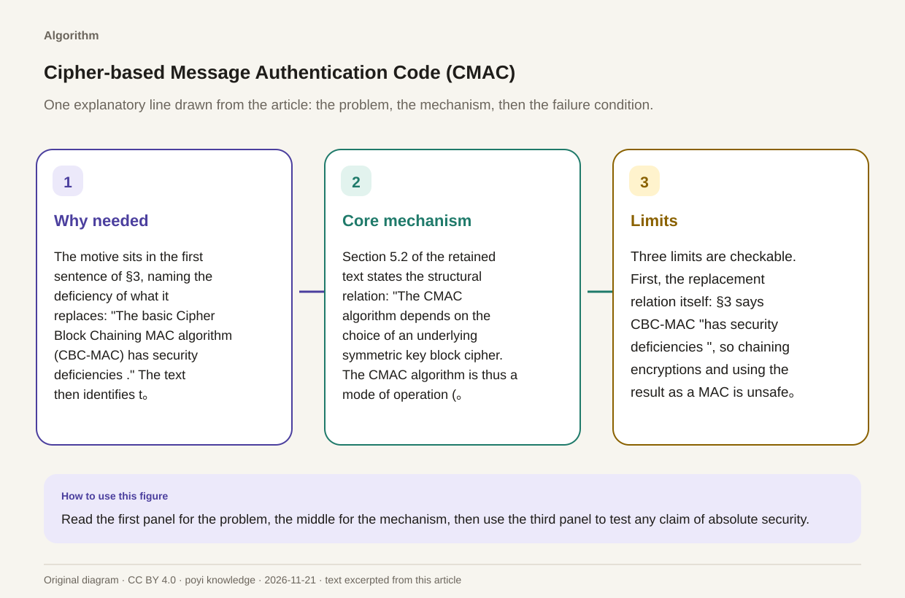
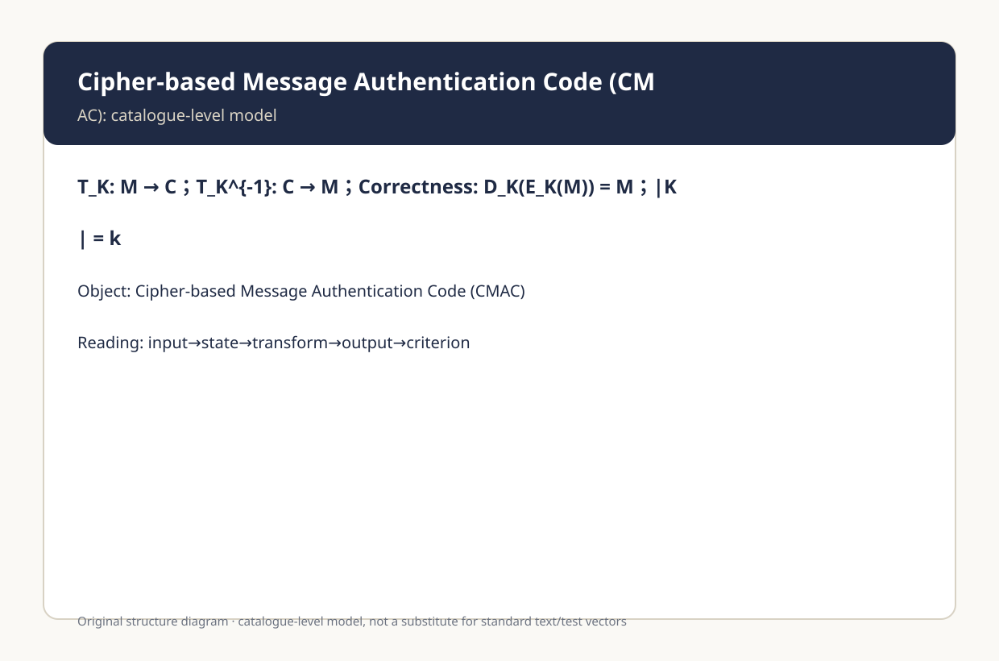

Principles
Algorithm: CMAC (CMAC 分组密码 MAC). Section 5.2 of the retained text states the structural relation: "The CMAC algorithm depends on the choice of an underlying symmetric key block cipher. The CMAC algorithm is thus a mode of operation (a mode, for short) of the block cipher. The CMAC key is the block cipher key (the key, for short)." So CMAC carries no cipher of its own: it selects a block cipher and reuses that cipher's key as the MAC key. The §4.1 definition of a MAC gives the property of the output: "A bit string of fixed length, computed by a MAC generation algorithm, that is used to establish the authenticity and, hence, the integrity of a message."

Why it matters
The motive sits in the first sentence of §3, naming the deficiency of what it replaces: "The basic Cipher Block Chaining MAC algorithm (CBC-MAC) has security deficiencies [9]." The text then identifies the core of CMAC as the XCBC variant proposed and analysed by Black and Rogaway. In other words, CMAC exists not to add another MAC but to patch a known weakness of CBC-MAC while still running on a block cipher.
Applications
The operational constraint is printed in §5.5: "The length of T, denoted Tlen, is a parameter that shall be fixed for all invocations of CMAC with the given key." The truncation length is therefore fixed per key and cannot be chosen message by message, with §5.4 handing the selection requirements to an appendix. Deployments use one key with one fixed tag length rather than mixing tag lengths under the same key.
A shared name may belong to an algorithm, standard, event, person or term; this entry is responsible only for its catalogue binding and does not absorb adjacent records. If versions, regions or institutions define the name differently, the differences stay side by side.

Limits & attacks
Three limits are checkable. First, the replacement relation itself: §3 says CBC-MAC "has security deficiencies [9]", so chaining encryptions and using the result as a MAC is unsafe, and CMAC is the correction. Second, the dependency printed in §5.2: "The CMAC algorithm depends on the choice of an underlying symmetric key block cipher" — a broken block cipher takes CMAC's security with it. Third, the converse of §5.4: Tlen must stay fixed for all invocations under a given key, so mixing tag lengths departs from the text.
History
The version facts come from the text itself. §1 states "This publication is the second Part in a series of Recommendations regarding modes of operation of symmetric key block ciphers." The cover line reads "Recommendation for Block Cipher Modes of Operation: The CMAC Mode for Authentication", so SP 800-38B is the second part of the block cipher modes series and is devoted to authentication; the retained copy is dated May 2005.
Worked example & verification
Formal model and reproduction steps
[T=\mathrm{MAC}_K(M),\quad \Pr[\mathrm{Forge}]\le\varepsilon(\lambda)]
CMAC: the registered public parameters, key material or randomness, and message are mapped through the stated transformation to an output checked against the registered criterion. The worked example is a structural reproduction, not a new test vector; parameter ranges, standard versions and implementation details remain source-bound.
References
- Wikipedia search entry for CMAC 分组密码 MAC. https://zh.wikipedia.org/w/index.php?search=CMAC%20%E5%88%86%E7%BB%84%E5%AF%86%E7%A0%81%20MAC
- Handbook of Applied Cryptography (Menezes, van Oorschot, Vanstone). https://www.cacr.math.uwaterloo.ca/hac/